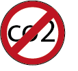
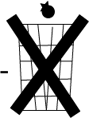

duurzaamheid
Tijdens mijn bezoek aan het blijdestijn moestuin kwam ik in gepsrek met onder andere een van de beheerders voordat ik het terein wou verlaten.We raakte in gesprek en maakte gebruik van deze mogelijkheid om te vragen waarom moestuinen eigenlijk zo duurzaam zijn
verbeterend Ecosysteem
Moestuinen dragen natuurlijk bij aan de voedsel productie. Doordat voedsel zelf wordt geteelt hoeft het niet getransporteerd te worden en is het niet afhankelijk van machines en fabrieken. Dit zorgt onderander voor een afnamen in co2
Bevordering van de biodiversiteteit
Daarnaast bevorderen moestuinen biodiversiteteit voor planten en dieren en dit zorgt dan weer voor een gezond eco systeems
Afnamen in afval
Moestuinen verminderen ook afval door bepaalde resten van afval om te composteren en hertegebruikem kan het worden gebruikt als natuurlijke mestof.Dit minimaliseert af en zorgt voor een schonere omgeving
